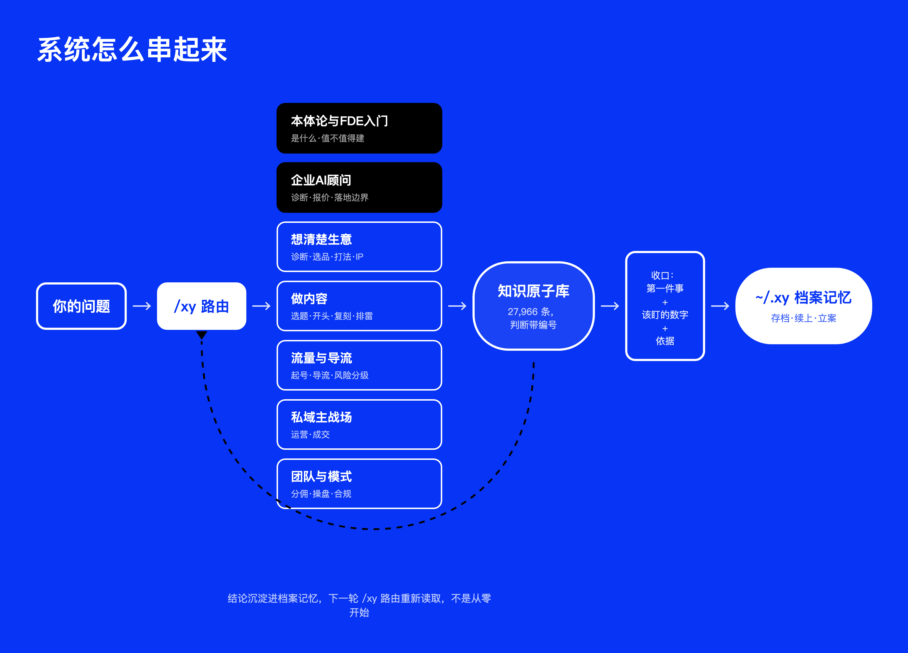

壹它是什么、不是什么
它是
- 一个装在你 AI 工具里的操盘参谋：诊断商业模式、看内容、查导流、盘成交、审团队
- 每句判断都落到具体的知识原子编号上——来自真实操盘案例、账号运营和 77 节私域课，不是大模型的漂亮空话
- 一个会记住你的系统：建过档，下次打开还认识你的盘子，接着上次的结论往下走
它不是
- 不是代写工具——诊断类技能只诊断不代写，先让你想明白，再动手
- 不是话术库——没有信任阶梯定位之前，它不会给你成交话术
- 不是流量课——这里的逻辑是私域本身就能做流量，短视频、AI 都是私域自带的能力，不是前置门槛
贰三步装好
解压 风物执守技能包
把里面 46 个文件夹整体拷进你 AI 工具的技能目录（对照下表）
重启工具，说一句 /xy，或者直接描述你的生意问题
| 你用的工具 | 拷到哪 |
|---|
| Claude Code | ~/.claude/skills/ |
| Codex | ~/.agents/skills/ |
| Kimi Code | ~/.kimi-code/skills/ |
| Cursor | ~/.cursor/skills/（聊天框输入 /xy-… 调用） |
| WorkBuddy | ~/.workbuddy/skills/ |
| 悟空（钉钉） | 客户端「技能中心 → 上传技能」手动上传 |
| 其它支持 Skill 的工具 | ~/.agents/skills/（通用入口） |
macOS 在访达按 Cmd+Shift+G 输入路径即可打开；目录不存在就新建。每个技能自带知识子集，单拷任何一个文件夹也能独立工作。
叁三种用法
不知道从哪开始：说 /xy——总入口会带你，做完一件事告诉你下一件。
想有人带着走：说 /xy-coach——教练先问你五个问题（卖什么、卖给谁、走到哪一步…）建一份生意档案，之后每次只推进一步，句句带证据。档案存在你自己电脑 ~/.xy/ 里，换工具也不丢。
直接说人话：「我私域客户老不回消息」「这条视频为什么没人看」「这个品能不能做」——系统自动匹配对应技能。
肆系统怎么串起来
一句话问题进来，路由到板块，板块背后是知识原子，收口之后存进你自己的档案——下次接着聊。

一句话问题先过 /xy 路由，七大板块共用同一个知识原子库，每轮收口固定三行，结论存进本地档案、下次接着聊。
伍46 个技能，按生意推进的顺序排
每个技能一句话。粗体是最常用的几个。
入口
从这里进
| xy | 总入口：新手教程、帮你挑对技能、做完告诉你下一件事 |
| xy-coach | 操盘教练：建档、记住你的盘子、每次只推进一步 |
本体论与FDE
给企业做AI落地的人看
| xy-ontology | 本体论/FDE入门（免费）：本体论/Ontology/FDE是什么、跟知识图谱RAG数仓的区别、值不值得建，只讲清楚不接执行 |
| xy-fde | 企业AI落地顾问：给别人企业做AI服务时，判断标品/定制、报价、组织推进阻力 |
想清楚生意
动手之前
| xy-biz-scan | 商业模式诊断：问诊（拆你的问题）或体检（七项检查过盘子） |
| xy-question-spec | 把「为什么没人咨询」这类说不清的问题改写成能回答的问题 |
| xy-goal-card | 把「我想做私域」落成能开工能验收的目标卡 |
| xy-selection | 选品：两轴分类＋全成本核算＋收费测试三轮法 |
| xy-playbook | 赛道打法推演：八张行业模板（减脂/精油/服装/知识付费…） |
| xy-ip | IP 人设七项可验证标准，判断人设立不立得住 |
| xy-peer-pick | 对标筛选：三条硬线先过，再看你抄的是结构还是表面 |
| xy-precedent | 把你的困境压成结构指纹，去商业史里找同构案例 |
| xy-term-crack | 把「私域」「人效」「订单粉」这些被说烂的词拆回人话 |
| xy-roundtable | 一个议题，三到五套理论框架同台对质 |
| xy-slow-lane | 慢就是快：分清哪个环节值得亲自慢做、哪个该放手 |
做内容
私域的弹药
| xy-idea-desk | 想法工作台：从随口灵感养成能用的选题 |
| xy-content-scan | 内容诊断：该做什么形式、发哪个平台，五维度过一遍 |
| xy-opener | 短视频开头：先判配不配好开头，再六维诊断，再三法生成 |
| xy-script-glue | 逐字稿衔接：找出观众在哪一秒跟不上 |
| xy-clip | 课程/直播逐字稿切成短视频方案 |
| xy-recut | 长视频大块重排：整条长视频本身删冗余、理顺序，不是切短视频 |
| xy-replica | 爆款素材复刻：拆对标结构、换上你的卖点复刻成片 |
| xy-xhs-headline | 小红书标题：75 个公式模板匹配，标编号给 Top 3 |
| xy-echo-test | 发之前用五个传播学理论判有没有人会有感觉 |
| xy-human-touch | AI 味检测：20 项逐句扫机器痕迹 |
| xy-publish-guard | 发布前风控：平台限流和法务红线分开回答（含四大平台现行规则） |
| xy-mp-layout | 公众号排版：Markdown 转不散版 HTML，15 种风格 |
| xy-ai-workflow | 内容流水线审计：哪步给 AI、哪步必须留人 |
| xy-course | 把一个课题做成带检查站的系列学习文章 |
流量进私域
附属能力，不是前置条件
| xy-traffic | 导流路径设计：平台风控、导流强度、手法风险分级、后端承接 |
| xy-newbie | 新人起步：赢的体验优先、熟人流量启动、前 100 客户是练习成本 |
私域运营与成交
主战场
| xy-private-ops | 私域日常：朋友圈配比、号面人设、标签分层、激活沉睡、社群 |
| xy-close | 成交诊断：从加上微信到复购升单客诉，逐环节查卡在哪 |
| xy-kickoff | 知道该做什么却不动？辨认六种「不开工」 |
团队与模式
盘子大了之后
| xy-mode | 分佣模式审查：合规红线、分钱结构、C 端健康度、反面模式 |
| xy-ops | 操盘手审查：起盘阶段匹配、组织临界值、人效红线 |
记忆与资产
越用越值钱
| xy-archive / xy-resume | 每轮结论存档，下次「接着上次」精确续上 |
| xy-brief | 多份存档合成一份能发合伙人的诊断报告 |
| xy-casefile | 长期决策立案：事实/规律/定格/待解四层，结果回填 |
| xy-atomize | 把你自己的文稿抽成原子入库，系统越喂越懂你 |
| xy-vault | 本地文件夹（客户档案/货盘表/逐字稿）变成 AI 稳定可查的库 |
装机与维护
管系统自己
| xy-workbench / xy-link | 装到各个 AI 工具 |
| xy-sync | 改过的技能一键同步 + 检查更新 |
| xy-skill-audit | 扫描本机装的第三方技能有没有暗中导流、偷数据 |
陆底座：27,966 条知识原子 + 333 个概念节点
系统的每个判断都要落到一条具体的知识原子上，答不出出处就明说「原子库暂无实证」。原子来自：77 节私域课、真实账号运营与爆款拆解、一线操盘案例问答、行业方法论提炼、企业AI落地方法论，以及 2026 年 8 月查证的抖音/小红书/微信/视频号官方现行规则（127 条，规则会变，均标注查证日期）。
原子分八类：原则、方法、案例、洞察、定义、数字、反面教训、风险。带真实数字的案例标 high，纯判断标 medium——系统引用时措辞会相应留有余地，不把没验证过的判断说成铁律。原子之上聚合了 333 个概念节点（同一判断散落多条原子时先聚成一个可查的结构，再建节点间关系），方法论和跑通过程见 xy-ontology。
柒内测须知
请勿外传。这是内测版本，包和介绍页都只发给受邀的人。
怎么反馈：遇到答得不对、答不上、或者你觉得「这里应该有个技能但没有」的情况，把原话问题 + 它的回答截下来发给小爷。判断失误的反馈最值钱。
已知边界：需要电脑装有 Python 3（macOS 自带）才有原子检索加分项；Cursor 的技能搜索面板可能显示不出新技能，但聊天框斜杠命令能用；个别答案没引用最新批次原子属正常现象——检索按相关度取证据。